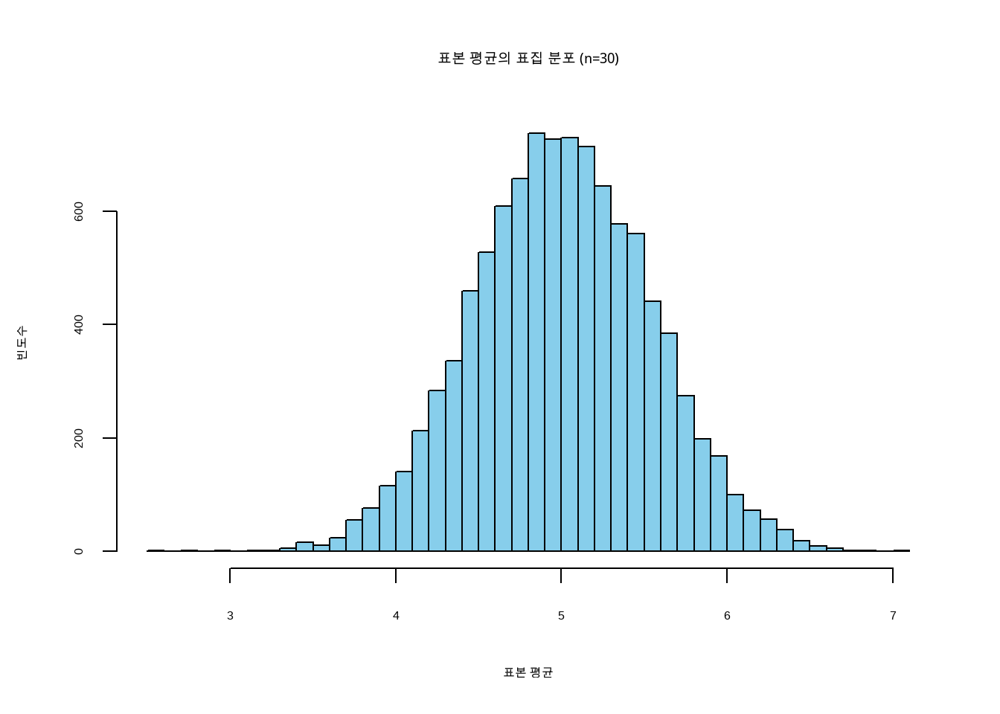

set.seed(2026)
sample_means <- replicate(
n = 5000,
expr = mean(sample(1:6, size = 30, replace = TRUE))
)
mean(sample_means)[1] 3.496233sd(sample_means)[1] 0.3100493탐색적 데이터 분석(Exploratory Data Analysis)은 데이터셋 내 변수들에 관해 유용한 통찰을 제공합니다. 탐색적 분석만으로는 우리가 던지는 근본적인 질문에 완벽히 답하기 어렵습니다. 통계적 추론(Statistical Inference)의 기저에 깔린 핵심 아이디어를 살펴보겠습니다.
지금까지 우리는 표본(Sample)으로부터 통계량을 계산하는 작업을 주로 다루었습니다. 통계량 계산 자체가 우리의 최종 목적은 아닙니다. 우리의 진정한 목표는 모수(Parameters)에 대해 타당한 추론을 내리는 것입니다. 따라서 모수와 통계량의 정의를 간략히 짚고 넘어가겠습니다.
모수는 우리가 관심을 갖는 전체 모집단(Population)의 특성을 설명하는 수치입니다. 통계량(Statistics)은 표본으로부터 계산된 수치이며, 일반적으로 모수를 추정하는 데 사용됩니다. 예를 들어, 표본 평균 \(\bar{x}\)는 모평균 \(\mu\)를 추정하고, 표본 비율 \(\hat{p}\)는 모비율 \(p\)를 추정하며, 표본 분산 \(s^2\)은 모분산 \(\sigma^2\)을 추정합니다. 이 쌍들에서 앞의 기호는 표본에서 구한 통계량이고, 뒤의 기호는 모집단의 모수입니다.
표본 통계량을 계산할 때 우리는 정확한 값을 알 수 없는 모집단 모수에 대한 일종의 추정치를 얻게 됩니다. 고전 통계학의 근본적인 가정 중 하나는 모든 모집단 모수가 비록 그 값은 알 수 없을지라도 고정된 상수(fixed quantity)라는 점입니다. 우리가 모수를 이미 완벽히 알고 있다면, 복잡한 통계적 추론 과정을 굳이 거칠 필요가 없을 것입니다.
설령 모집단 모수를 안다고 가정하더라도, 특정 표본에서 구한 통계량이 그 모수와 정확히 일치하는 경우는 매우 드뭅니다. 왜냐하면 표본 통계량은 어떤 표본이 추출되느냐에 따라 달라지는 확률적 수치(random quantity)이기 때문입니다. 이해를 돕기 위해 모집단 크기가 작고 모수를 이미 알고 있는 단순한 상황을 가정해 보겠습니다.
5명의 학생으로 구성된 소규모 모집단이 있고, 이들이 한 학기 동안 수강하는 평균 학점을 추정하고자 합니다. 학생들의 학점은 아래 표와 같습니다.
| 학생 ID | 학점 |
|---|---|
| 1 | 18 |
| 2 | 15 |
| 3 | 12 |
| 4 | 13 |
| 5 | 15 |
이 모집단의 실제 모평균은 \(\mu=14.6\)입니다. 이제 어떤 제약으로 인해 우리가 표본 크기를 \(n=2\)로만 추출할 수 있다고 가정해 보겠습니다. 5명의 모집단에서 2명을 뽑는 가능한 조합은 총 10가지입니다. 이 10가지 조합 각각에서 계산된 표본 평균은 다음과 같습니다.
| 학생들 | 평균 | 학생들 | 평균 |
|---|---|---|---|
| 1,2 | 16.5 | 2,4 | 14 |
| 1,3 | 15 | 2,5 | 15 |
| 1,4 | 15.5 | 3,4 | 12.5 |
| 1,5 | 16.5 | 3,5 | 13.5 |
| 2,3 | 13.5 | 4,5 | 14 |
실제 모평균은 14.6이지만, 어떤 표본이 뽑히느냐에 따라 표본 평균은 다양하게 나타납니다. 결과적으로 표본 평균을 비롯한 모든 표본 통계량은 무작위 추출 과정에 의존하므로 그 자체로 확률 변수(random variable)가 됩니다. 앞서 다루었듯 확률 변수란 결과를 미리 알 수 없는 무작위 현상(이 경우 표본 추출)의 수치적 요약을 뜻합니다. 통계량 역시 확률 변수이므로 특정한 확률 분포를 따르게 됩니다. 이처럼 크기가 \(n\)인 표본으로부터 계산된 표본 통계량의 확률 분포를 표집 분포(sampling distribution)라고 부릅니다. 모든 표본 통계량은 저마다의 표집 분포를 가지며, 이 분포는 우리가 수집한 데이터가 우연에 의한 것인지 아니면 통계적으로 유의한지(비정상적인지)를 판단하는 기준이 됩니다.
표집 분포의 중심 위치뿐만 아니라, 표본 통계량에 얼마나 많은 변동성(variability)이 존재하는지도 중요한 관심사입니다. 변동성이 크다는 것은 표본을 뽑을 때마다 통계량의 값이 크게 요동칠 수 있음을 의미합니다. 데이터 자체의 변동성을 파악하기 위해 분산과 표준편차를 계산하듯, 표본 통계량에 대해서도 분산이나 표준편차를 계산할 수 있습니다. 이처럼 ’표본 통계량의 표준편차’를 우리는 특별히 표준 오차(standard error)라고 부르며, 흔히 \(\text{s.e.}\)로 표기합니다.
위에서 다룬 \(n=2\)인 학점 예시를 다시 살펴보겠습니다. 10개의 가능한 표본 평균들의 평균은 모평균과 동일한 14.6이 됩니다. 그리고 이 10개 표본 평균값들이 중심(14.6)으로부터 얼마나 흩어져 있는지를 계산해 보면, 이 표본 평균의 표준 오차는 \(\text{s.e.}(\bar{x})=1.26\)이 됩니다.
표집 분포는 크기가 \(n\)인 표본에 기반하므로, 표본 크기에 따라 그 형태가 달라진다는 점을 쉽게 유추할 수 있습니다. 분포가 표본 크기의 영향을 받는다면 통계량의 표준 오차 또한 영향을 받습니다. 우리는 대수의 법칙(law of large numbers)을 통해 표본 크기가 커질수록 표본 통계량이 실제 모수 값에 점점 더 수렴한다는 사실을 알고 있습니다. 그렇다면 표준 오차는 어떻게 될까요?
표본 크기를 \(n=4\)로 늘려 동일한 모집단에서 표본을 추출한다고 가정해 보겠습니다. 5명 중 4명을 뽑는 조합은 총 5가지이며, 각각의 표본 평균은 아래와 같습니다.
| 학생들 | 평균 |
|---|---|
| 1,2,3,4 | 14.5 |
| 1,2,3,5 | 15 |
| 1,2,4,5 | 15.25 |
| 1,3,4,5 | 14.5 |
| 2,3,4,5 | 13.75 |
이 5가지 표본 평균들의 평균은 여전히 14.6입니다. 하지만 이번에는 표본 평균들이 중심에 더 가깝게 모여 있어, 표준 오차를 계산하면 \(\text{s.e.}(\bar{x})=0.515\)로 줄어듭니다. 즉, 표본 크기가 증가할수록 표준 오차는 감소합니다. 직관적으로 생각해 보아도 당연한 결과입니다. 만약 전체 모집단을 모두 표본으로 조사할 수 있다면(\(n=N\)), 오직 하나의 표본 평균(모평균과 동일한 값)만을 얻게 될 것이며 이때 표준 오차는 0이 됩니다. 모집단이 매우 커서 사실상 무한하다고 볼 수 있는 경우에는 극한의 개념을 빌려 다음과 같이 표현할 수 있습니다.
\[ \lim_{n \to \infty} \text{s.e.} = 0 \]
결론적으로 표본 크기가 커지면 표본 통계량의 변동성(표준 오차)이 줄어들고, 이는 곧 표집 분포가 중심 주위로 더욱 뾰족하게 압축된다는 것을 의미합니다. 한 회사의 직원 20명의 통근 시간 데이터를 예로 들어 보겠습니다. 모든 직원의 통근 시간을 알고 있을 때, 표본 크기를 \(n=5\), \(n=10\), \(n=15\)로 늘려가며 가능한 모든 표본 조합을 구해보면 표본 크기가 커질수록 분포의 폭이 눈에 띄게 줄어드는 것을 확인할 수 있습니다.
요약하자면 표본 통계량은 무작위 추출이라는 본질적 특성 때문에 그 자체로 확률 변수입니다. 따라서 확률 분포인 표집 분포(Sampling distribution)와 변동성을 나타내는 표준 오차(Standard error)를 동반합니다. 표본 크기가 증가할수록 변동성은 감소하고 분포는 더욱 좁아집니다.
위에서 설명한 표집 분포의 개념은 무척 논리적이지만, 현실적인 제약이 하나 있습니다. 이론적인 표집 분포를 완벽히 구성하려면 가능한 모든 표본 조합을 조사해야 한다는 점입니다. 현실에서는 단 하나의 표본을 제대로 수집하는 것조차 많은 비용과 시간이 소요되는데, 모든 표본을 수집하는 것은 실무적으로 불가능에 가깝습니다.
이러한 한계에도 불구하고 우리가 통계적 추론을 수행할 수 있는 이유는, 수학적으로 증명된 표집 분포의 몇 가지 강력한 성질 덕분입니다. 첫째, 표본 평균이나 표본 비율 같은 대표적인 통계량의 표집 분포는 실제 모집단 모수를 중심으로 형성됩니다. 즉, 가능한 모든 표본 통계량의 평균을 구하면 실제 모수와 정확히 일치합니다. 이런 성질을 갖는 추정량을 불편 추정량(unbiased estimator)이라고 부릅니다. 모든 통계량이 이 성질을 갖는 것은 아니어서, 예컨대 표본 표준편차 \(s\)의 기댓값은 모표준편차 \(\sigma\)보다 약간 작습니다. 둘째, 표집 분포의 퍼짐 정도는 앞서 다룬 표준 오차를 통해 계산할 수 있습니다.
놀랍고 중요한 세 번째 성질은 표본 비율과 표본 평균의 표집 분포 형태에 관한 것입니다. 앞서 통근 시간의 표집 분포를 시각화해 본다면 그 모양이 점차 종 모양(bell-shaped)에 가까워진다는 것을 발견할 수 있습니다. 표본 비율의 경우도 마찬가지입니다.
동전을 100번 던져 앞면이 나온 비율을 계산하는 과정을 10,000번 반복한다고 상상해 보십시오. 이 시뮬레이션을 통해 얻은 앞면 비율들의 표집 분포는 완벽에 가까운 종 모양을 띠게 됩니다.
이러한 종 모양 특성은 단순한 우연이 아닙니다. 중심극한정리에 따르면 표본 크기 \(n\)이 충분히 클 때, 표본 평균의 표집 분포는 중심이 실제 모평균 \(\mu\)이고 분산이 표준 오차의 제곱인 정규분포(Normal distribution)로 근사됩니다. 아래에서 \(\dot\sim\) 기호는 ’근사적으로 이 분포를 따른다’는 뜻입니다.
\[ \bar{x} \ \dot\sim\ N\!\left(\mu,\; \text{s.e.}(\bar{x})^{2} \right) \]
표본 비율에 대해서도 완전히 동일한 원리가 성립합니다. 표본 크기가 충분히 커지면, 표본 비율의 표집 분포 역시 중심이 실제 모비율 \(p\)이고 분산이 표준 오차의 제곱인 정규분포를 따르게 됩니다.
\[ \hat{p} \ \dot\sim\ N\!\left(p,\; \text{s.e.}(\hat{p})^{2} \right) \]
이처럼 표본 평균과 표본 비율의 표집 분포가 정규분포로 근사된다는 이 놀라운 정리를 바로 중심극한정리(Central Limit Theorem)라고 부릅니다. 딥러닝 모델의 복잡한 파라미터 추정이나 대규모 데이터 분석에서도 이 정리는 데이터의 노이즈를 다루는 강력한 이론적 기반이 됩니다. 우리는 이 결과 덕분에 다음 장부터 본격적으로 다루게 될 가설 검정(Hypothesis testing)과 신뢰 구간(Confidence intervals) 같은 통계적 추론을 현실적으로 수행할 수 있습니다.
중심극한정리의 구체적인 예로 다시 동전 던지기를 살펴보겠습니다. 공정한 동전(앞면이 나올 실제 확률 \(p=0.5\))을 100번 던져 표본 비율 \(\hat{p}\)을 계산한다고 가정해 봅시다. 이때 \(\hat{p}\)의 표준 오차는 \(\text{s.e.}(\hat{p})=0.05\)로 계산됩니다. 중심극한정리에 의해, 우리가 구한 표본 비율은 평균이 \(0.5\)이고 분산이 \(0.05^2\)인 정규분포를 대략적으로 따르게 됩니다. 수학적 기호로는 다음과 같이 표현합니다.
\[ \hat{p} \sim N(0.5, 0.05^2) \]
공정한 동전(앞면과 뒷면이 나올 확률이 각각 50%)을 50번 던져 뒷면이 나온 비율을 계산한다고 가정해 보겠습니다. 이 과정을 아주 여러 번 반복한다면, 뒷면 비율의 표집 분포는 대략 어떤 값을 중심으로 하는 정규분포를 띠게 될까요?
여러분은 특정 모집단에서 \(n=100\) 크기의 표본을 추출하고, 동료는 동일한 모집단에서 \(n=500\) 크기의 표본을 추출했습니다. 두 사람 중 누구의 표본 통계량이 더 작은 표준 오차를 가질까요?
임의의 모집단에서 추출한 표본을 바탕으로 표본 평균을 계산합니다. 표본 크기가 점점 커짐에 따라, 표본 평균의 표집 분포는 어떤 형태의 분포로 수렴하게 됩니까?
사람들의 보폭 길이를 조사하여 표본 평균 보폭을 계산한다고 가정해 보겠습니다. 더 많은 사람을 조사할수록(표본 크기가 커질수록) 표본 평균 보폭의 표준 오차는 어떻게 변합니까? 또한 표집 분포의 모양은 어떤 분포에 가까워질까요?
표집 분포(Sampling distribution)는 단일 표본에서 관찰되는 데이터의 분포가 아니라, 동일한 조건에서 표본을 반복적으로 추출했을 때 우리가 구하고자 하는 ’통계량’이 어떻게 변동하는지를 보여주는 분포입니다. 이 개념이 중요한 이유는 단 하나의 표본 평균이나 표본 비율만으로는 오차의 불확실성을 정확히 측정할 수 없기 때문입니다. 같은 모집단에서 동일한 크기의 표본을 다시 뽑더라도 평균값은 매번 미세하게 달라집니다.
set.seed(2026)
sample_means <- replicate(
n = 5000,
expr = mean(sample(1:6, size = 30, replace = TRUE))
)
mean(sample_means)[1] 3.496233sd(sample_means)[1] 0.3100493위 코드는 1부터 6까지의 주사위 눈 평균이라는 아주 단순한 상황을 시뮬레이션하지만, 여기에 담긴 핵심 논리는 현대의 복잡한 추론 문제에도 똑같이 적용됩니다. 선거 여론조사의 지지율(표본 비율), 신약 임상시험의 치료 효과 차이, 복잡한 머신러닝 회귀분석에서의 기울기 추정량 등 그 어떤 통계량도 표본이 바뀌면 변동합니다. 통계적 추론이란 바로 이 피할 수 없는 ’변동성’을 무시하는 것이 아니라, 오히려 계산의 중심에 두고 불확실성을 과학적으로 다루는 절차입니다.
앞서 언급한 표집 분포의 특성과 중심극한정리를 R의 시각화 도구를 통해 눈으로 직접 확인해 보겠습니다. 다음 코드는 균등 분포에서 표본을 추출하여 표본 평균의 분포가 정규분포 형태(종 모양)에 근접해지는 과정을 보여줍니다.
library(showtext)Loading required package: sysfontsLoading required package: showtextdbfont_add_google("Nanum Gothic Coding", "NanumGothicCoding")
showtext_auto()
set.seed(2026)
# 균등 분포(Uniform distribution)에서 10,000번의 표본 평균 추출 시뮬레이션
# 각 표본의 크기는 n = 30
sample_means_n30 <- replicate(
10000,
mean(runif(n = 30, min = 0, max = 10))
)
# 표집 분포 히스토그램 시각화
hist(sample_means_n30, breaks = 50, col = "skyblue",
main = "표본 평균의 표집 분포 (n=30)",
xlab = "표본 평균", ylab = "빈도수")
원래의 데이터가 균등 분포를 따르더라도 표본 크기가 30 정도 되면, 표본 평균들의 히스토그램은 뚜렷한 정규분포 형태를 나타냅니다. 이것이 바로 중심극한정리의 강력함입니다. 이 과정을 코드로 시뮬레이션 해보는 것은 통계적 추론의 원리를 직관적으로 이해하는 데 큰 도움이 됩니다.